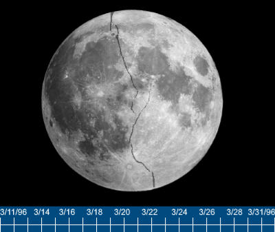
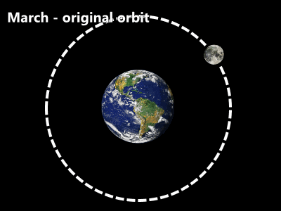

|
Добро пожаловать, Дуглас Корни
Внутренняя новостная сеть Сайдириал Плексус
ВСЯ НАХОДЯЩАЯСЯ ЗДЕСЬ ИНФОРМАЦИЯ ПОЛНОСТЬЮ КОНФИДЕНЦИАЛЬНА.
ЕЁ РАСПРОСТРАНЕНИЕ КАРАЕТСЯ ПРИВЛЕЧЕНИЕМ К ОТВЕТСТВЕННОСТИ. БЛАГОДАРИМ ЗА ПОНИМАНИЕ.
< Вернуться к ленте новостей
СОВЕРШЕННО СЕКРЕТНО
3/11/1996 - АНАЛИЗ ВЗРЫВА НА ЛУНЕ

Количество энергии, выделившейся во время взрыва, трудно установить; сам инцидент не только
разрушил внутреннюю и внешнюю структуры Луны, но и придал ей достаточное ускорение, чтобы преодолеть
гравитационную силу, которая смогла бы - говоря языком дилетанта - всё притянуть обратно.
Итоги у произошедшего, к сожалению, катастрофичны. Согласно симуляции,
Луна перестанет представлять собой шарообразный спутник к концу месяца.
Оставшиеся осколки продолжат расходиться, но в какой-то момент замедлятся и будут полностью остановлены гравитацией Луны.
И это только начало.
Мы прогнали ещё пару симуляций, чтобы посмотреть, изменилась ли орбита Луны из-за инцидента.
По началу мы заметили 0.5% изменение в угловой скорости Луны.

Изменения однако ЕСТЬ, и разница продолжит РАСТИ со временем.
Хотелось бы мне верить, что наши симуляции просто ошиблись, но мы запускали их уже сто раз, постоянно
меняя самые разные факторы и условия - результаты не обнадёживают.
Орбита Луны продолжит отклоняться от первоначального курса с постоянным ускорением,
пока не произойдёт столкновение с Землёй. Мы предполагаем, что это произойдёт приблизительно между 21 и 26 ноября этого года.
У нас осталось менее 9 месяцев до конца света.
Человечество, скорее всего, не проживёт так долго, мы подозреваем появление различных аномалий:
гравитационных, электромагнитных, климатических, - которые сотрут нашу цивилизацию с лица планеты за несколько последующих недель.
Да смилуется Господь.
Конец отчёта.
др. [УДАЛЕНО]
|